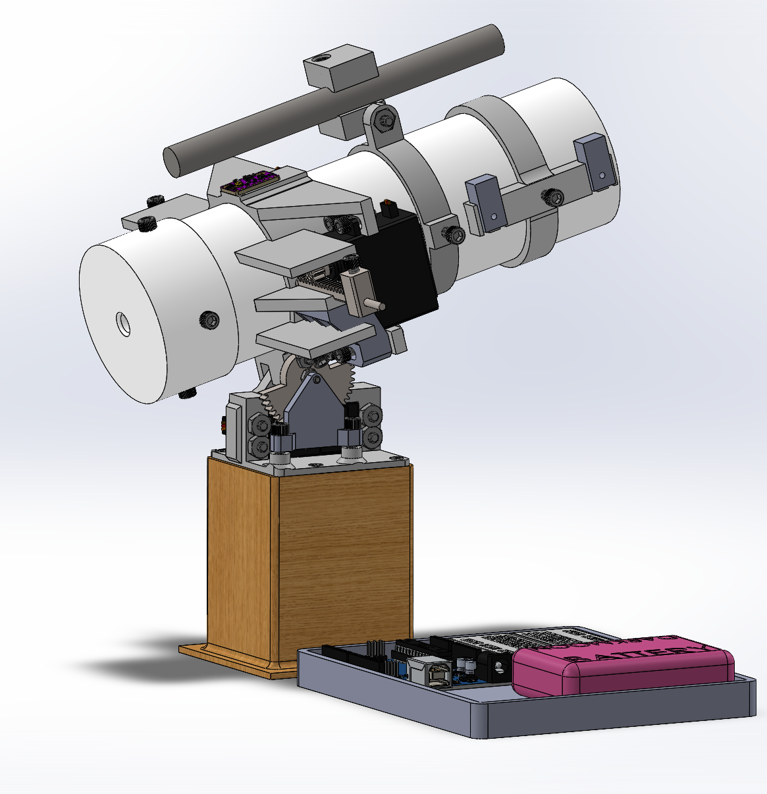
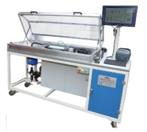

Portfolio of Projects
SDA's Tranche 0 Transport Layer - Terran Orbital
Bandsaw Blade Guide UX Design - Laguna Tools


Two-Legged Walker - UCI

Golf Ball Launcher Design and Manufacturing Project - UCI

Automated Rotary Machine - Bal Seal Engineering



Solids & Liquids Rocket Project - UCI


Yosemite Balsa Wood Bridge - UCM